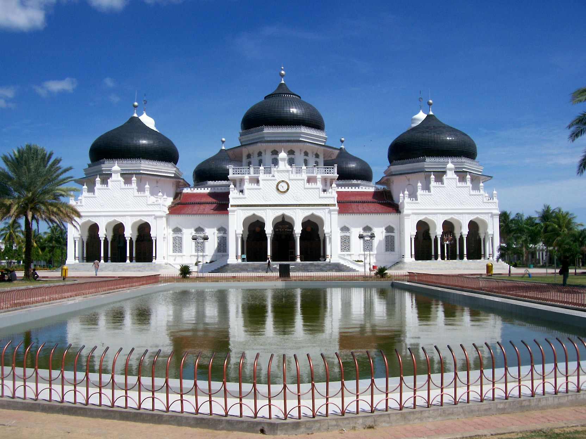
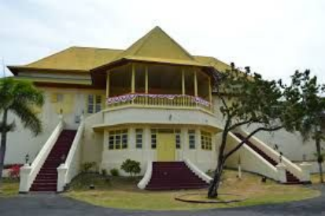
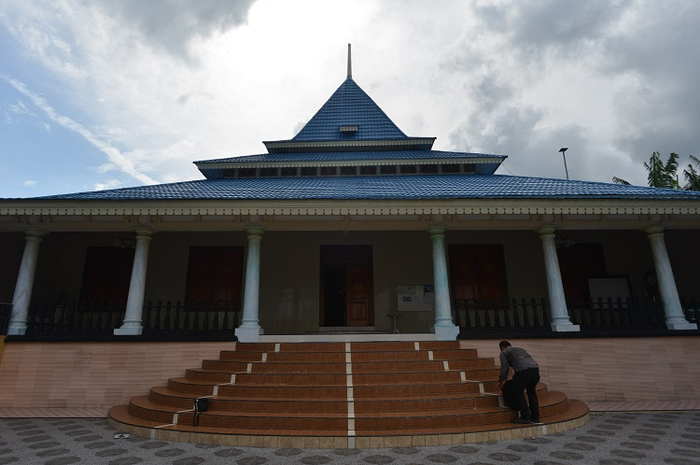

Materi Kerajaan Islam
Eksplorasi sejarah kerajaan Islam di berbagai wilayah Nusantara. Klik tombol Materi untuk membaca materi selengkapnya atau uji pemahaman Anda melalui kuis.
Regional Sumatera

Kesultanan Samudera Pasai
Diakui sebagai kerajaan Islam pertama di Indonesia yang berdiri pada abad ke-13, dengan Sultan Malik al-Saleh sebagai raja pertamanya.

Kesultanan Aceh Darussalam
Didirikan oleh Sultan Ali Mughayat Syah pada 1514. Pusat perdagangan dan pertahanan Islam yang sangat kuat di Nusantara barat.
Regional Jawa

Kesultanan Demak
Kerajaan Islam pertama di Pulau Jawa yang berdiri akhir abad ke-15 setelah runtuhnya Kerajaan Majapahit.

Kesultanan Banten
Berdiri pada 1526. Menjadi pusat perdagangan maritim yang sangat ramai dan makmur di pesisir barat Pulau Jawa.

Kesultanan Cirebon
Didirikan oleh Sunan Gunung Jati pada abad ke-15, menjadi pusat penyebaran agama Islam di wilayah Jawa Barat.
Regional Sulawesi & Maluku

Kesultanan Gowa-Tallo
Kerajaan maritim terbesar di Sulawesi Selatan (Makassar) yang memeluk Islam pada awal abad ke-17 di bawah Sultan Alauddin.

Kesultanan Ternate
Pusat rempah-rempah yang didirikan pada 1257 M, berkembang pesat sebagai kekuatan maritim di timur Nusantara.

Kesultanan Tidore
Memiliki akar sejarah yang sama dengan Ternate, berkembang menjadi kerajaan Islam kuat pada akhir abad ke-15.